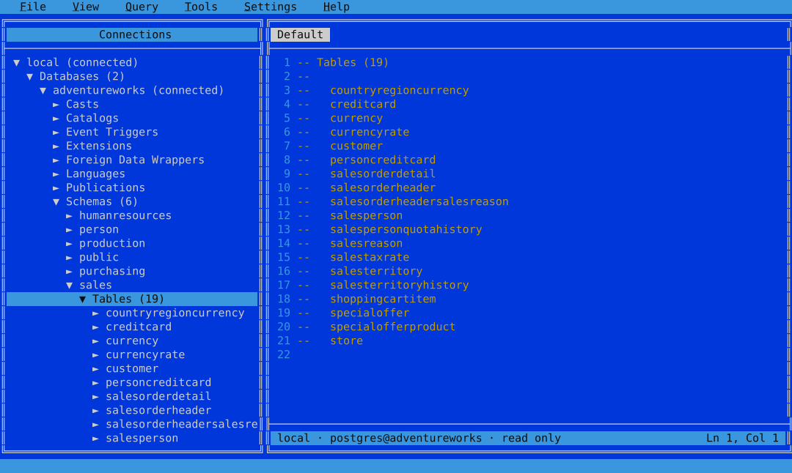
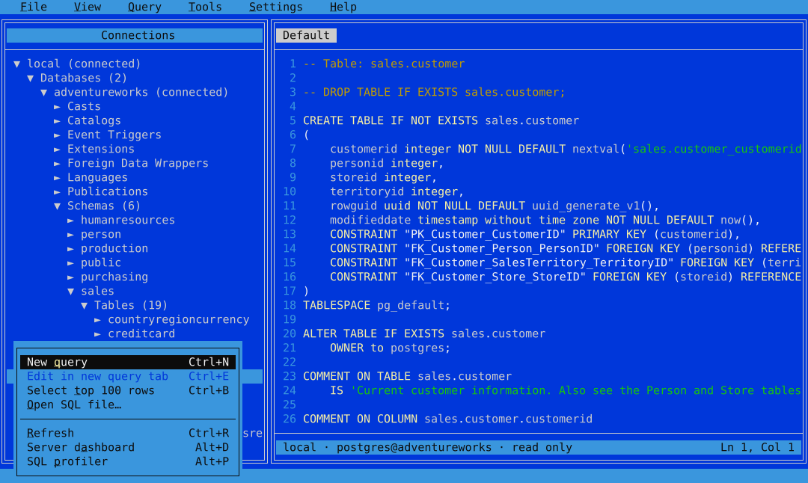
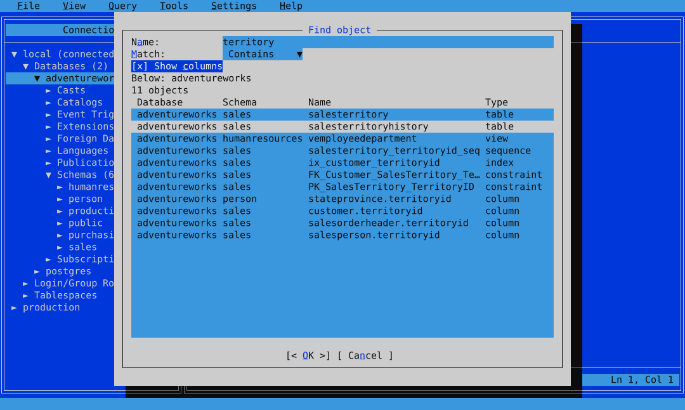
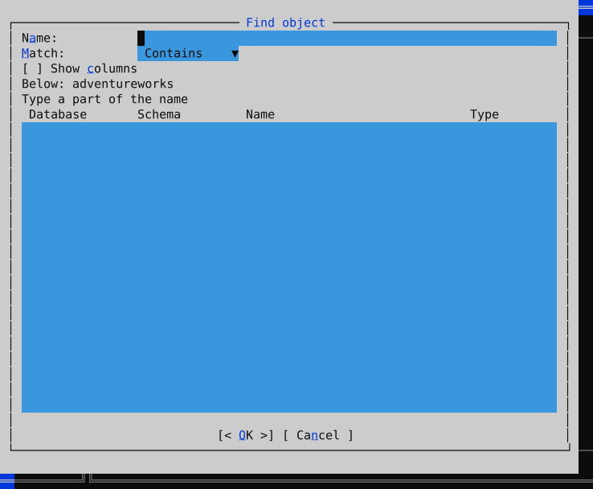
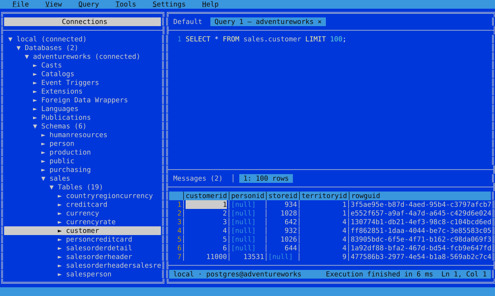

Object tree
The left frame: your servers and everything in them. How to move in it, what it contains, how to find an object, and what you can start from a row.

sales.Moving in the tree
A row with ► can be opened; a row with ▼ is open. Rows without a mark have nothing
below them.
| Key | What it does |
|---|---|
| Up / Down | Previous / next row. |
| Right | Opens the row. |
| Left | Closes the row. |
| Enter | Opens a closed row, closes an open one. |
| PgUp / PgDn | A page up / down. |
| Home / End | First / last row. |
| Alt+S or Ctrl+S | Quick search among the rows you see. |
| Ctrl+F | Find object — searches the database. |
The tree is loaded as you open it: opening Tables asks the database for the tables of that schema, and
shows loading… for the moment that takes. Once loaded, a group shows how many objects it has:
Tables (19), Schemas (6).
Opening a database row connects to that database (the row then says (connected)); the first time this can take a moment.
The mouse works too: click a row to select it, click with the right button for its context menu, and drag the border between the tree and the tabs to make the tree wider or narrower.
What the tree contains
| Below | Groups |
|---|---|
| Server | Databases · Login/Group Roles · Tablespaces |
| Database | Casts · Catalogs · Event Triggers · Extensions · Foreign Data Wrappers · Languages · Publications · Schemas · Subscriptions |
| Schema (and each catalog) | Tables · Views · Materialized Views · Functions · Procedures · Trigger Functions · Sequences · Types · Domains · Aggregates · Collations · Operators · FTS Configurations · FTS Dictionaries · FTS Parsers · FTS Templates · Foreign Tables |
| Table | Columns · Constraints · Indexes · Triggers · Rules · Policies · and, for a partitioned table, Partitions (a partition has the same groups as a table) |
| View | Columns · Rules · Triggers |
| Materialized view | Columns · Indexes |
| Foreign table | Columns |
- Functions are split as in pgAdmin: Functions, Procedures and Trigger Functions (functions
that return
trigger). - Catalogs holds the two system schemas — PostgreSQL Catalog (pg_catalog) and ANSI (information_schema). They are always shown there, and never under Schemas. Each has the same groups as a schema.
System objects
To keep the tree short, these are hidden unless you ask for them:
- the schemas
pg_toastand the temporary schemas; - template databases (
template0,template1); - the built-in roles whose names start with
pg_; - objects that belong to an extension (they are covered by the extension's row).
To see them, open and check Show system objects in the tree. The setting applies to all servers and is remembered.
The tree and the Default tab
The Default tab on the right always shows the row the tree cursor is on:
| Row | The Default tab shows |
|---|---|
| An object (table, view, function, index, column, role, …) | Its SQL definition — see Object view. It is asked from the database when the cursor has rested on the row for a moment, so you can run through the tree without waiting. |
| A group (Tables, Columns, …) | The list of the objects in it. |
| A server | Its connection data, state, version and configuration — see Connections. |

The context menu of a row
F2 or a right click opens the menu of the selected row. What is in it depends on the row:

customer.| Row | Items |
|---|---|
| Server | Connect · Disconnect │ Refresh · Server dashboard · SQL profiler │ Edit connection… · Delete connection |
| Databases, Login/Group Roles, Tablespaces and the roles and tablespaces in them | Refresh |
| Database | New query · Edit in new query tab · Open SQL file… │ Refresh · Server dashboard · SQL profiler · Database statistics │ Export database definition… · Load database definition… |
| Anything inside a database | New query · Edit in new query tab · Select top 100 rows (only on tables, views and the rows below them) · Open SQL file… │ Refresh · Server dashboard · SQL profiler |
| Item | Key | What it does |
|---|---|---|
| New query | Ctrl+N | Opens a query tab connected to the database of the row. |
| Edit in new query tab | Ctrl+E | Puts the definition shown on the right into a new query tab, so you can change and run it. See Object view. |
| Select top 100 rows | Ctrl+B | See below. |
| Open SQL file… | Opens a SQL file in a query tab connected to the database of the row. | |
| Refresh | Ctrl+R | See below. |
| Server dashboard | Alt+D | The dashboard of the server (on a server row) or of the database (on a database row or below). |
| SQL profiler | Alt+P | The profiler of the server. |
| Database statistics | Alt+I | The statistics of the database. |
| Export / Load database definition… | See Database definition. |
There is one more key that is not in any menu: F3 opens the selected object in a new tab that stays open while you move on in the tree.
Commands that need a database — New query, Open SQL file — work only when the cursor is on a database or inside one, on a connected server. Elsewhere the menu item is disabled and the key only shows a hint in the status line.
Refresh
The tree does not watch the database: an object created in a query tab, or by somebody else, appears after a refresh.
- Ctrl+R in the tree reloads everything below the selected row that was already loaded. Rows that still exist stay open as they were.
- From another part of the window use .
- On a server row, Ctrl+R also reads the server's configuration again.
Refreshing also makes the autocomplete of your query tabs read its names again.
Quick search (Alt+S)

salesp: the cursor is on salesperson, and the bottom line
shows the search text.Quick search moves the cursor among the rows that are visible in the tree right now — as in Midnight Commander.
- Press Alt+S (or Ctrl+S).
- Type the first letters of a name. The cursor jumps to the next row whose name starts with what you typed; upper and lower case do not matter. The status line shows Quick search: ….
- Press Alt+S again to jump to the next match.
- Enter, Esc or an arrow key ends the search; the cursor stays where it is.
Quick search asks nothing from the database, so it is instant — but it cannot find a table in a schema you have not opened. For that, use Find object.
Find object (Ctrl+F)
Find object searches the database, so it also finds objects in parts of the tree you never opened. It searches everything below the selected row.

adventureworks with territory in its name, columns included.- Put the tree cursor on the row to search below: a database to search the whole database, a schema for one schema, a table for its columns and indexes, a server for everything on the server.
- Press Ctrl+F (or ). The line Below:
shows where the search will look.

The Find object dialog before you type. - Type a part of the name in Name. A moment after you stop typing, the list fills.
- Move in the list with Up / Down / PgUp / PgDn — you do not have to leave the input.
- Press Enter. The dialog closes and the tree opens down to exactly that object: every level on the way is opened and loaded, the cursor lands on the object, and the right side shows its definition.
The options
| Field | Meaning |
|---|---|
| Name | The text to look for. Upper and lower case do not matter. % and _ are ordinary characters here, not wildcards. |
| Match | Contains (default), Starts with or Ends with. |
| Show columns | Off by default: columns are not searched. Check it to find columns too — they are listed last, as table.column. |
The result list
- Columns: Database, Schema, Name, Type. Sub-objects are shown with their table
(
customer.territoryid), functions with their argument types. - Order: by type in the order of the tree — schemas, tables, views, sequences, functions, …, indexes, constraints, triggers, …, columns last — then by name.
- At most 200 rows are shown; with more, the count line says 200+ objects — type more to narrow the search.
What is searched
| Selected row | Searched |
|---|---|
| Server | Databases, roles, tablespaces — and everything in every database of the server. |
| The group Databases | The databases and everything in them. |
| Database | Everything in that database. |
| Schema | Everything in that schema. |
| A group (Tables of a schema, Indexes of a table, …) | Only objects of that kind, there. |
| Table, view | Its columns (if checked), indexes, constraints, triggers, rules, policies, partitions. |
| A row with nothing below it (a column, a role, …) | Nothing — the status line says so. |
- Searching a whole server: each database is searched through its own connection, all at the same time; results appear as each database answers (1 of 20 databases). pgtc opens at most 8 connections of its own for this and closes them when the dialog closes. A database that cannot be opened — a password is needed, you may not connect — is skipped and named in the count line (not searched: db3 (password needed)).
- System objects are searched only when Show system objects is on; otherwise the catalogs
(
pg_catalog,information_schema) are left out. - Found kinds: schemas, tables, partitions, views, materialized views, foreign tables, sequences, functions, procedures, trigger functions, aggregates, types, domains, collations, indexes, constraints, triggers, rules, policies, columns, extensions, event triggers, publications, languages, foreign data wrappers. Not found: casts, operators, full-text search objects, subscriptions.
In the editor and in a definition, Ctrl+F is Find / replace in the text. Find object is Ctrl+F only while the tree has the focus.
Select top 100 rows (Ctrl+B)

sales.customer.The quickest way to look into a table. Put the cursor on a table, view, materialized view, foreign table or partition — or on any row below it (a column, the Indexes group, an index…) — and press Ctrl+B.
pgtc opens a new query tab connected to that database with
SELECT * FROM sales.customer LIMIT 100;and runs it as soon as the tab is connected. The statement is ordinary text in an ordinary query tab: change it —
add a WHERE, an ORDER BY — and press F5 again. Names that need quotes are quoted
for you.
Also in and in the context menu. On rows that are not part of a table or view the command is not available.
Tabs opened from the tree
| Key | On | Opens |
|---|---|---|
| F3 | Any row | The row in its own object tab. |
| Ctrl+N | A database or anything in it | A query tab. |
| Ctrl+E | An object inside a database | Its definition in a query tab, ready to edit. |
| Ctrl+B | A table, view, or a row below one | A query tab with its first 100 rows. |
| Alt+D (Ctrl+D) | A server, a database, or anything in one | The server dashboard. |
| Alt+P (Ctrl+P) | A server or a database | The SQL profiler. |
| Alt+I | A database | The database statistics. |
All of them need a connected server.